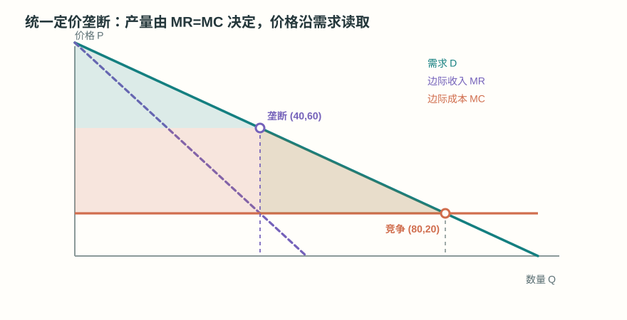
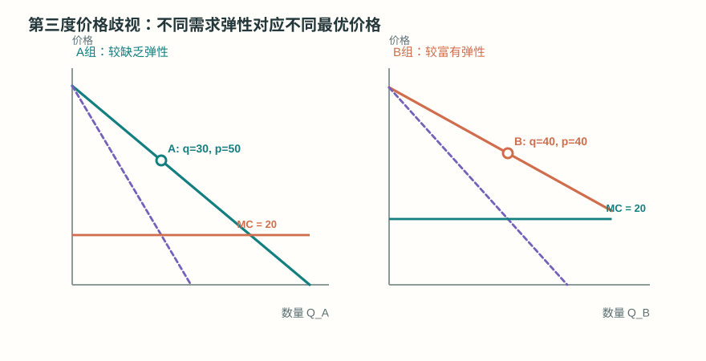

CHAPTER 15 · MICROECONOMICS
垄断：市场势力与价格歧视
从进入壁垒到MR=MC，解释垄断定价、市场势力、无谓损失和分组价格歧视。
垄断从哪里来？先问竞争者为什么进不来
如果一家企业面对整个市场的需求曲线，它就不能像价格接受者那样任意增加产量而保持售价不变。垄断市场势力来自进入壁垒：关键资源被控制、法律授予的专营或专利权、网络或规模优势，以及其他让潜在竞争者难以进入的技术和市场条件。
自然垄断通常出现在相关市场规模范围内，单一企业凭借很高的固定成本和较低的边际成本，能够以比多家企业重复建设更低的平均成本供给市场。专利也可能在有限期限内授予排他权，以支持创新投资。垄断本身不自动等于违法；需要区分竞争优势、法定排他权、滥用市场支配地位和监管政策。
垄断企业为什么面对 MR<P？
设市场反需求为P=100−Q，边际成本为常数20，且没有固定成本。若企业希望多卖一单位，就必须降低价格；在统一定价下，降价不仅作用于新增单位，也作用于原本可以按更高价格卖出的单位。因此边际收入低于当前价格。
利润最大化仍满足MR=MC：100−2Q=20，得到垄断产量QM=40。把数量代回市场需求，垄断价格PM=60。垄断者先用MR=MC找数量，再沿需求曲线读取消费者愿意支付的价格；不能把价格直接设为MC。
竞争基准下，若价格等于边际成本，则P=20，QC=80。相同需求和边际成本下，统一定价垄断选择更少产量和更高价格。

消费者剩余、生产者剩余与无谓损失
在QM=40、PM=60时，消费者剩余为800，生产者剩余（此例无固定成本，等于利润）为1600，总剩余为2400。竞争基准QC=80、PC=20时，消费者剩余为3200，生产者剩余为0，总剩余为3200。垄断没有创造出被取消的40单位交易价值；其中一部分转移给生产者，另有一部分交易本可创造的总剩余完全消失。
这组数值假设需求与边际成本已完整反映社会边际收益和成本，且没有外部性、质量变化、创新动态效应或监管成本。现实中的专利、规模经济与创新激励可能带来额外收益；不能仅凭静态三角形就完成全部政策判断。
市场势力与需求弹性：加价空间有多大？
垄断企业的加价幅度受需求弹性约束。需求越缺乏弹性，价格相对边际成本的加价空间越大；需求越富有弹性，消费者更容易转向替代品，企业越难大幅加价。在可微、单一产品、统一价格且内部最优的条件下，勒纳指数可写为：
本例垄断点P=60、Q=40，线性需求的斜率为−1，所以需求弹性绝对值为P/Q=1.5；勒纳指数为(60−20)/60=2/3，恰好等于1/1.5。该关系不意味着企业可以随意设定弹性；它描述给定需求、成本和最优选择下的约束。
还有一个重要结论：垄断企业没有一条只由成本决定、像竞争企业MC曲线那样独立存在的供给曲线。垄断产量取决于需求曲线和边际成本的共同位置；需求变化，即使成本不变，也会改变最优数量。
价格歧视：同一产品为何可能有不同成交价？
价格歧视是企业根据消费者支付意愿或可识别群体的需求差异收取不同价格，而不是因为产品质量或服务成本不同而出现的价格差异。企业通常需要一定市场势力、识别或设计不同群体的能力，以及限制低价消费者转售给高价消费者的能力。
常见分类包括：一级价格歧视（理想化地按每位消费者或每单位的最高支付意愿定价）；二级价格歧视（通过套餐、数量阶梯或版本菜单让消费者自我选择）；三级价格歧视（按可识别群体分别定价）。三级价格歧视的内部最优条件是各市场的边际收入相等，并等于共同边际成本。
假设两个群体的反需求分别为PA=80−QA、PB=60−0.5QB，MC=20。分组定价时，MRA=80−2QA，MRB=60−QB；解得A组Q=30、P=50，B组Q=40、P=40。A组在最优点的需求弹性绝对值约1.67，小于B组的2，因此价格更高。

这个特定的线性需求例子中，统一价格时两组总销量也是70，但分组定价把数量从A组转向B组：企业收入从约3033.33升至3100，消费者剩余从950降至850，总剩余从约2583.33降至2550。这个结果提醒我们：价格歧视通常能提高企业收益，但消费者剩余与社会总剩余的变化并不保证同方向；这里总量相同而分配改变，恰好使总剩余下降约33.33。
在其他需求形状和市场条件下，价格歧视可能扩大总产量，也可能减少总产量。一级完全价格歧视在理想条件下可能把产量扩展到P=MC的有效率水平，但把消费者剩余转移给企业；不能将一级、二级、三级价格歧视混为同一种福利结果。
交互实验：改变边际成本，并切换定价制度
统一价格垄断计算器
反需求P=100−Q，常数边际成本MC可调，固定成本设为0。比较垄断与竞争基准的产量和无谓损失。
垄断Q=40、P=60；竞争Q=80、P=20；DWL=800。
该模型假设需求为线性、边际成本恒定、无固定成本、无外部性。
第三度价格歧视：统一价格还是分组定价？
统一价格：两组价格43.33，总销量70，收入3033.33，消费者剩余950，总剩余2583.33。
两组需求为PA=80−QA、PB=60−0.5QB，MC=20；价格差异不是成本差异。
为什么本例的分组定价虽然提高了企业收益，却没有提高总销量，反而降低总剩余？
查看解析
在线性分组需求且共同常数MC的这个特殊例子中，两种定价方式的总销量恰好都为70。分组定价把部分交易从A组转移到边际支付意愿较低的B组，配置不再满足两组边际支付意愿相等，因此总剩余下降。其他需求形状下，总销量可能改变。
参考资料与模型边界
资料用于核对概念定义和推导条件。本章数值均为明确标注的教学假设，图解独立绘制。